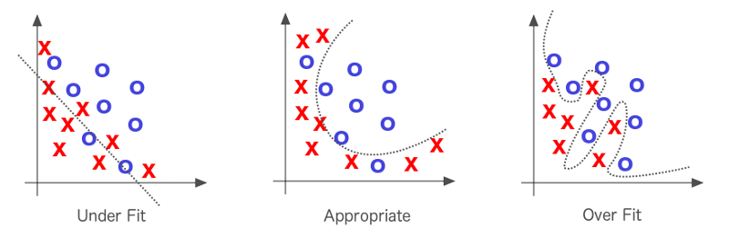
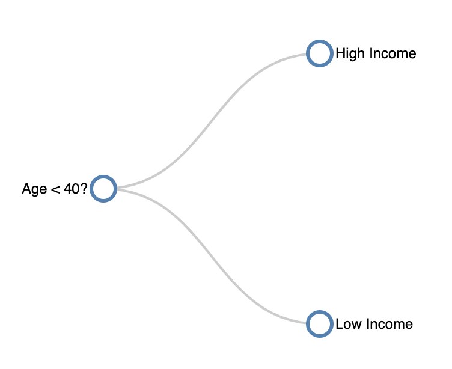

A Beginners Guide To:
Machine Learning Classification
Scroll to Learn!
A Brief History of Classification
Can computers learn from data?
This question led to the development of machine learning. In 1959, Arthur Samuel (a pioneer computer scientist) defined machine learning as “the field of study that gives computers the ability to learn without being explicitly programmed”.
While this may sound complex, we hope to make some machine learning concepts approachable and easy to learn through examples and activities in this article.
Understanding Algorithms
 Think of it this way – as you can learn these concepts through experimenting with examples, computers can do the same!
Think of it this way – as you can learn these concepts through experimenting with examples, computers can do the same!
To grasp how machine learning works, we need to understand algorithms - the method for creating models from data. In this article, we will show you popular algorithms that perform classification tasks on a simple dataset related to income.
Case Study
Is Income Predictable?
You are starting your senior year of high school, and are trying to decide if you will further your education beyond graduation. You are wondering if you will see high enough returns in the long run that will allow you to live a comfortable life and pay off student loans. To do this, you look at US census data, and gather real examples of peoples:1. Age
2. Number of years of education
3. What their income is
You classify income as high if it exceeds $50,000 (Data is from the 1994 US census bureau database. $50,000 is worth ~$88,000 in 2020).
Lets take a quick look at the data below:
Exploring the dataset
As you probably realized, looking at raw data isn’t very useful. So now lets look at visualizations to see what more we can learn from this dataset!
First, let’s look at a simple bar chart showing the number of people with high income and without. As you can see here, there is an equal number of people (16) with high and low income in the dataset, totaling 32 records.
Color this chart by:Next, let’s look at the spread of peoples’ ages. When the high income button is selected to the right, you can see how old people who have a high income are.
Color this chart by:This graph shows the amount of people by years of education. When the high income button is selected, you can see how many years of education people with a high income have.
Finally, let’s look at the age and education variables together in a scatterplot.
After looking at the data, do you think more years of schooling truly result in a higher income for you?
Evaluating Your Model
After exploring the data, we hope that you got a sense of which patterns are more likely to mean that someone is high income or not. By doing this, you were actually training your own model, which is almost exactly what machine learning models do! However, now that your model is trained, lets put it to the test and have you predict the income of 3 mystery people.Mystery Person #1:
Age: 57
Years of Education: 15
Mystery Person #2:
Age: 22
Years of Education: 7
Mystery Person #3:
Age: 30
Years of Education: 10
Using Machine Learning
We will now complete the same classifying task with three commonly used classification algorithms:
Training
Before we get into the algorithms, we need to understand why models need training. Training a model simply means teaching the model good values for a set of examples. Each example will help the model to understand the relationship between the variables (in this case, age and education years) and the classification value (income). Once the relationship is understood, the model will be able to predict an unknown classification value for new sets of variables.Warning: Overfitting
One thing to pay attention to when using machine learning algorithms is overfitting. Overfitting happens when a model is too complex and starts to classify according to a random error in the data over the expected relationships between variables. A model is considered “overfit” when it fits your training data really well, yet performs poorly on new data.
One way to identify an “overfit” is to reserve a portion of your data set and introduce it after you are finished creating your model to see how it performs. If you model performs poorly on the reserved set, it is overfit to the training data! A way to understand how the model performs is by adjusting the hyperparameters, which are higher-level properties of the model. In our case, they would be the value of K, the depth of the decision tree, or the threshold value for the logistical regression 
K Nearest Neighbors (KNN)
The K Nearest Neighbors (KNN) algorithm classifies data based on data that is most similar. KNN uses similar data for classification by plotting a test point with training data points and classifies the test point based on the class of the number (K) of points closest to the test point.
In this example the the right, our “test point” is the red point. Click on the buttons to see how different values of k can lead to different classifications.
Here, we will apply KNN to our dataset, where you can interact and vary the number of neighbors (K) to see how it will affect what the model predicts.
Here, you can play around with the number of neighbors (k) to see what our model would predict for the last mystery person with an age of 30 and 10 years of education. If you remember from above, this person is classified as low income, but if you make K is 2 or less, the KNN algorithm would actually predict high income. This is because the nearest neighbor is classified as high income.
However, having K = 2 presents an interesting problem as the neighbors are classified differently. While there are many approches to break a tie, we are using the “nearest” approach, which uses the class with the nearest neighbor. There is also the “random” approach, which selects the class of a random neighbor.

Decision Trees
The decision tree is an important machine learning algorithm that is commonly used for classification problems, just this case! This algorithm follows a set of if-else conditions to classify data according to the conditions. An example of a decision tree is shown on the right.
What is depth?
The depth of decision trees refers to the number of layers that the tree has. Decision tree depth is a delicate balance, as too much depth could cause overfitting, and too little depth could lead to less accuracy. To ensure that your tree has appropriate depth, there are two commonly used methods:1. Grow the tree until it overfits, then start cutting back
2. Prevent the tree from growing by stopping it just before perfect classification of the training data Let’s look at how the data performs at different depths below.
Below is a visualization showing the decision tree run on our census dataset! Use the scroller to change the maximum depth of the decision tree.
Depth 1

Now, let’s gain a different perspective on how the decision tree makes predictions. Each line in the graph above represents a split in the decision tree. This graph shows how the decision tree breaks down the data into smaller and smaller rectangles and makes the prediction based on which rectangle the data point lands in.
One interesting note thing to note is that as the max depth increases, the decision tree tries to account for the anomalous data point
(the 32 year old with 9 years of education who is a high earner). If we were to increase max depth past 4, the decision tree would wrap
around the square containing the anomalous data point and predict all future data points within that square as “High Income”.
What is this an example of?
Logistic Regression
Contrary to its name, logistic regression is not a regression algorithm, but a classification algorithm. It does so by performing a linear regression based on the attributes, and then uses that regression to calculate the probability of whether or not the data point is in a certain class.
Before understanding logistic regression, one must first understand linear regression. Suppose we have a set of points that are in tuples (x, y). We can visualize this set of points in a scatterplot, such as one right here:
What if we wanted to fit a line that best fits this data? Our data is noisy, so it won’t fit a line perfectly, but one can manually try to do so.
Alternatively, one can use a method called “ordinary least squares”, or OLS for short.
Since a line can be written as a function, any line can be used to create estimates of an output given
input values. Each point has a corresponding residual, which is computed by taking the difference between
the actual value and our estimated value. OLS is the method that calculates the slope and intercept of the
line that minimizes the sum of the squares of these residual values:
This scary equation pretty much just helps us find the line that best fits our data points. So, for our example, our ordinary least-squares regression line is:
Now that we know the basics of linear regression, we can move on to logistic regression! While explaining the theory behind logistic regression is beyond the scope of this article, we will explain in the overall concept of how to perform logistic regression.
For a given data point, we can find the OLS estimate using our least-squares regression line equation.
This OLS output will be the x-value of the datapoint. The y-value of the datapoint is the label, which,
in our original example, is whether or not an individual has a high income (we can set y = 1 if the data point
has a high income, and y = 0 otherwise). For our dataset, we get the regression line of approximately
where YoE is short for the “Years of Education” value. We can then plot the points as such:
Notice how the points with X<0 are usually labeled with 0 (low income), while points with X>0 have a label of 1 (high income). We can see that there is a point with X ~ -3.593 that is a clear outlier. Looking back at our exploratory data analysis, this is the outlier point point of (9, 32) that is labeled as high income despite the fact that all similar points are low income.
Moving beyond the dataset, the next question is naturally how would we figure out what our model would label points we haven’t seen before?
To do so, we fit a sigmoid function on our linear regression line. The sigmoid function is defined as: The sigmoid function is plotted on the right.
The sigmoid function applied to a linear regression model provides the probability that we classify the output
as a 1 (having high income) given the linear regression output , or
. The mathematical intuition behind
this is also beyond the scope of the article, but these probabilities are then used to classify unknown points. We can set a threshold value,
and then given a probability of the point being labeled as 1, use the threshold to decide how to classify the data point.
Changing the threshold could affect what we label points as. Feel free to use the slider below to see how big our linear regression output
needs to be to label the data as “high income” given different threshold values. Note that the red line is the threshold probability, and the
shaded green area shows the corresponding values of X that would be classified as “1”, or having high income.
0.3 0.7
Value of threshold: 0.50.
Model Selection
Now that we introduced ourselves to the three classification models, how would we decide which model to use?
Note that for the earlier parts of this report, we only ran an algorithm on 32 points of data. However, the dataset these points originally came from actually had 32,561 rows of data! If we run the algorithm on all of the rows (using the best hyperparameters for all the models), we would receive the following accuracies:
We see that for each algorithm, the training and test accuracies are close to each other, signifying that our models do not exhibit
overfitting. In addition, the accuracies are actually pretty close between the different algorithms! This means when looking at accuracy,
the performance of these models are similar. As a future step, one can look at other measures of performance, such as precision and recall,
to determine what the best model is. Other factors, such as an individual’s understanding or interpretability of the model, may also be
considerations when selecting models in the future.
Conclusion
Great Job!
We hope that you now have a good understanding of the basics of 3 different types of machine learning classification algorithms. As you saw, these algorithms learn from the data input given and use it to classify new observations. These algorithms are used to perform analytical tasks that would take humans hundreds of more hours to perform!
Machine learning has applications in many fields like medical, defense, finance, and technology just to name a few. And, classification algorithms are at the heart of many innovations like image recognition, speech recognition, self-driving cars, email spam filtering, and ecommerce product recommendations. We hope you are inspired to further your knowledge about these topics!